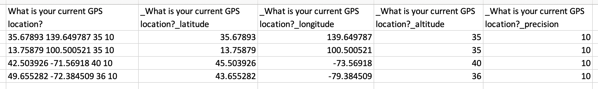

Parcourez la base de connaissances, explorez nos ressources et visitez notre Forum communautaire pour des informations plus détaillées
Dernière mise à jour : 5 Jun 2026
Les questions GPS dans KoboToolbox vous permettent de collecter des informations géographiques précises sous forme de points uniques, ou d’un ensemble de points représentant un trajet ou une zone lors de la collecte de données. Chaque enregistrement GPS comprend la latitude, la longitude, l’altitude et la précision, que vous pouvez consulter directement dans le tableau de données. KoboToolbox propose également un mode Carte intégré qui permet aux utilisateurs de visualiser des points GPS uniques, d’explorer des tendances et de mieux comprendre où les soumissions ont été collectées.
Cet article explique comment visualiser et cartographier des données GPS dans KoboToolbox, et décrit les formats d’export disponibles pour utiliser des données géospatiales dans d’autres outils et flux de travail.
KoboToolbox vous permet de collecter trois types de données GPS dans vos formulaires :
Type de question dans le Formbuilder |
Type de question dans XLSForm |
Type de données GPS |
|---|---|---|
Position |
|
Un point unique |
Ligne |
|
Un trajet composé de plusieurs points |
Zone |
|
Une zone composée de plusieurs points |
Toutes les réponses GPS apparaissent dans le tableau de données et sont incluses dans les exports de données. Seuls les points uniques, appelés geopoints dans l’interface utilisateur, peuvent être affichés dans le mode Carte de KoboToolbox.
Note : Vous pouvez également collecter automatiquement la localisation en arrière-plan à l'aide des métadonnées GPS. Les points GPS collectés via les métadonnées de formulaire ne peuvent pas être affichés dans le mode Carte.
Les données GPS peuvent être collectées à l’aide des formulaires web et de KoboCollect.
Pour en savoir plus sur la collecte de données GPS dans vos formulaires KoboToolbox, consultez l'article Collecter des données GPS avec KoboToolbox.
KoboToolbox inclut un mode Carte intégré qui affiche les points GPS collectés via votre formulaire. Tout utilisateur disposant de la permission Afficher les soumissions peut accéder à la carte via les droits d’accès au niveau de l’utilisateur.
Pour ouvrir la carte :
Ouvrez votre projet et accédez à la page DONNÉES.
Dans le menu de gauche, sélectionnez Carte.
Si votre formulaire contient au moins une question de type geopoint, les localisations collectées apparaissent sur la carte.

Vous pouvez effectuer un zoom avant ou arrière à l’aide des boutons et situés en haut à gauche de la carte. Pour afficher la carte en plein écran, cliquez sur Basculer en plein écran en haut à droite.
Lorsque plusieurs points GPS sont proches les uns des autres, ils apparaissent sous la forme d’un point groupé unique accompagné d’un chiffre indiquant le nombre de soumissions regroupées. Effectuez un zoom avant pour afficher les points individuels.
Note : Seules les questions de type geopoint sont affichées sur la carte. Les données de type geotrace et geoshape ne sont pas affichées.
Par défaut, la carte affiche les données de la première question de type geopoint de votre formulaire. Si votre formulaire contient plusieurs questions de type geopoint, vous pouvez choisir laquelle afficher.
Pour sélectionner une question différente :
Cliquez sur Paramètres d’affichage de la carte.
Sous QUESTION GÉOPOINT, sélectionnez une autre question de type geopoint dans la liste.

Note : Cette option n'est disponible que si votre formulaire contient plus d'une question de type geopoint.
Vous pouvez modifier la façon dont les données GPS sont affichées sur la carte à l’aide des contrôles disponibles.
Pour changer le type d’affichage :
Cliquez sur Afficher comme carte thermique en haut à droite pour visualiser les données sous forme de carte thermique.
Cliquez sur Afficher avec des points pour revenir aux marqueurs de points individuels.
Note : Une carte thermique est une visualisation qui montre la concentration des soumissions en fonction de leurs coordonnées géographiques. Les zones où les points de données sont plus regroupés apparaissent plus intenses, tandis que les zones avec moins de soumissions apparaissent plus claires. Les cartes thermiques permettent d'identifier des tendances géographiques et des zones de concentration sans afficher les points individuels.
Pour changer la couche de fond de carte :
Cliquez sur Afficher/Masquer les couches dans le coin supérieur droit.
Sélectionnez une couche de base, telle qu’OpenStreetMap, OpenTopoMap, ESRI World Imagery ou Humanitarian. La couche de base par défaut est OpenStreetMap.

Vous pouvez également ajouter des couches personnalisées supplémentaires par-dessus votre carte :
Ouvrez Paramètres d’affichage de la carte.
Accédez à SUPERPOSITIONS.
Saisissez un libellé pour la couche et importez un fichier au format CSV, KML, KMZ, WKT ou GeoJSON.
Les fichiers importés apparaissent comme des couches optionnelles que vous pouvez activer ou désactiver depuis la carte.
Note : Seuls les propriétaires de projet ou les utilisateurs disposant des permissions Gérer le projet peuvent ajouter des couches personnalisées à une carte.
Vous pouvez regrouper les points GPS sur la carte en fonction des réponses à d’autres questions de votre formulaire. Cela vous permet de comprendre comment les différents groupes de répondants sont répartis géographiquement.
Pour désagréger les points :
Cliquez sur Désagréger les données selon les réponses aux enquêtes en bas à gauche de la carte.
Sélectionnez la question que vous souhaitez utiliser pour catégoriser les points. Vous pouvez également changer la langue d’affichage.

Pour changer le jeu de couleurs utilisé pour les points désagrégés :
Ouvrez Paramètres d’affichage de la carte.
Sélectionnez COULEURS DES POINTS.
Choisissez un jeu de couleurs différent.
Pour supprimer la désagrégation :
Cliquez sur Désagrégé en utilisant : [libellé de la question].
Sélectionnez – Voir toutes les données – dans la liste.
Si votre projet contient plus de 1 000 soumissions, la carte n’affiche que 1 000 points GPS par défaut. Vous pouvez augmenter le nombre de points affichés depuis les paramètres de la carte.
Pour modifier le nombre de points affichés :
Ouvrez Paramètres d’affichage de la carte.
Sélectionnez LIMITE DE LA REQUÊTE.
Ajustez le curseur pour choisir le nombre de soumissions à afficher sur la carte.
L’affichage d’un grand nombre de points GPS peut ralentir votre navigateur, en particulier avec des jeux de données volumineux. L’augmentation de la limite est temporaire et se réinitialise à chaque fois que vous rouvrez la carte.
KoboToolbox propose plusieurs options pour exporter des données GPS. Chaque format est adapté à différents flux de travail, notamment la révision des données, la cartographie et l’analyse géospatiale.
Lors de l’export de données au format CSV ou XLS, les coordonnées GPS sont incluses dans plusieurs colonnes :
Une colonne contenant l’ensemble complet des coordonnées.
Pour les questions de type geopoint uniquement, des colonnes séparées pour la latitude, la longitude, l’altitude et la précision.

Note : Dans ce contexte, précision et exactitude désignent la même valeur.
Les exports CSV et XLS sont utiles pour réviser et nettoyer les données dans un logiciel de tableur. Ils peuvent également être importés dans de nombreux outils SIG, bien qu’une préparation supplémentaire soit souvent nécessaire. Cela peut inclure la spécification des champs de coordonnées, la définition d’un système de référence de coordonnées, ou la conversion des données dans un autre format géospatial.
Note : Pour les questions de type geotrace et geoshape, les exports CSV et XLS incluent une seule colonne contenant les coordonnées GPS séparées par des points-virgules. Un traitement supplémentaire est généralement nécessaire pour extraire les points individuels ou convertir les données en géométries de type ligne ou polygone pour une utilisation dans un logiciel SIG.
Le format GeoJSON est recommandé pour préparer des données GPS en vue de leur utilisation dans un logiciel SIG tel qu’ArcGIS ou QGIS. Il est largement disponible et fonctionne bien avec les flux de travail géospatiaux courants.
Lors de l’export au format GeoJSON, KoboToolbox convertit les types de questions GPS en types de géométrie GeoJSON standard, comme indiqué ci-dessous :
Formbuilder |
XLSForm |
GeoJSON |
|---|---|---|
Position |
|
Point |
Ligne |
|
LineString |
Zone |
|
Polygon |
Lors de l’export, la valeur de précision incluse dans les coordonnées GPS n’est pas conservée, car GeoJSON ne dispose pas d’un champ de précision. L’ordre des coordonnées change également, passant de latitude longitude dans KoboToolbox à longitude latitude dans GeoJSON.
Par défaut, les exports GeoJSON sont structurés par soumission. Pour une meilleure compatibilité avec les outils SIG, vous pouvez activer l’option Aplatir GeoJSON dans les paramètres d’export avancés. Cela regroupe toutes les réponses GPS en une seule FeatureCollection.
Note : Lorsque le GeoJSON est aplati, il peut être plus difficile d'identifier quelles réponses GPS proviennent de la même soumission. Cela est particulièrement notable dans les formulaires contenant plus d'une question GPS par soumission. Pour les formulaires ne comportant qu'une seule question GPS par soumission, cela ne pose généralement pas de problème.
Si une soumission ne contient pas de valeur pour une question GPS, elle n’apparaîtra pas dans l’export GeoJSON. Si vous prévoyez d’exporter des données au format GeoJSON, assurez-vous qu’au moins une question GPS est renseignée pour chaque soumission.
Si votre formulaire contient plusieurs questions GPS, vous souhaiterez peut-être n’exporter que celle que vous prévoyez d’utiliser pour la cartographie. Utilisez l’option Sélectionner les questions à exporter dans les paramètres d’export avancés pour limiter les champs GPS inclus.
Le format KML est destiné à la visualisation dans des outils qui fonctionnent nativement avec ce format, tels que Google Earth. Il permet un style de base pour un affichage cartographique rapide. Bien que les exports KML soient toujours disponibles dans KoboToolbox, ce format est limité et ne doit être utilisé que lorsqu’un flux de travail spécifique l’exige.
Les exports KML dans KoboToolbox sont disponibles uniquement pour les questions de type geopoint. Si un formulaire contient des questions de type geotrace ou geoshape, ces géométries ne sont pas incluses dans l’export KML.
Si un formulaire contient plusieurs questions de type geopoint, seul le premier geopoint du formulaire est inclus dans le fichier KML. Les questions de type geopoint supplémentaires sont ignorées. De plus, les exports KML n’incluent que la localisation du geopoint et l’identifiant de la soumission. Les autres champs de la soumission ne sont pas inclus.
Enfin, comme pour GeoJSON, l’ordre des coordonnées change, passant de latitude longitude dans KoboToolbox à longitude latitude dans GeoJSON.
Note : Pour en savoir plus sur l'export de vos données GPS depuis KoboToolbox, consultez l'article Exporter et télécharger vos données.
Avez-vous trouvé ce que vous cherchiez ? Les informations étaient-elles claires ? Manquait-il quelque chose ?
Partagez vos commentaires pour nous aider à améliorer cet article !